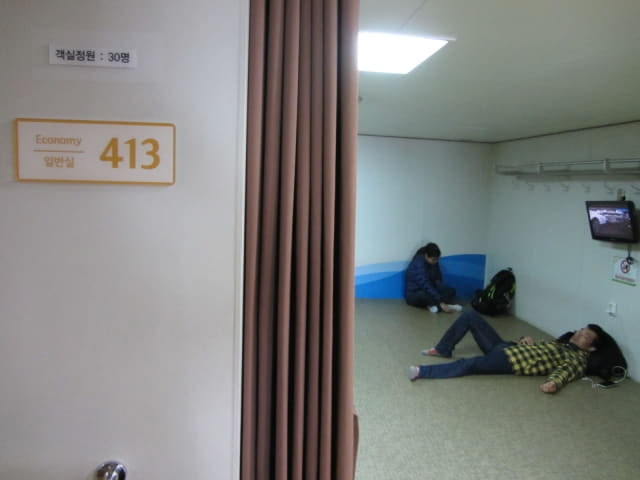
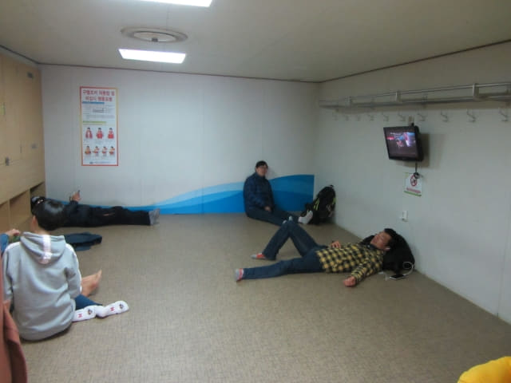

很順利登上往木浦的 Sea Star Cruise 號輪船, 找到了我們被編排到的413號房間, 是最便宜的標準房間, 不過最多只可同時容納十位乘客。這麼大的房間, 只容納十位乘客, 真是十分舒適。我們選擇了其中一個牆角的有利位置, 這樣便不會被其他乘客打擾。我大部份時間都在甲板欣賞風景, 其實什麼房間也不重要。



放下背囊, 便急不及待出外四處參觀輪船的設施。
餐飲區。
禮品店。
按摩房間。所有按摩椅都坐滿了乘客, 相信是最受歡迎的地方。
餐廳, 是最多旅客聚集的地方, 但食物一點也不便宜, 單是一小碟泡菜, 已經要1,500韓元, 幸好吃完午餐才上船。

船艙外的甲板, 我大部份時間都在這裡欣賞風景。雖然十分大風和寒冷, 但望著無際的大海, 感覺卻十分舒服。
哈哈~~~ 纱羅峯公園山頂上的八角展望台。想起昨天站在那裡眺望濟州港旅客碼頭, 現在卻站在這裡遠眺展望台, 真是十分奇妙, 也慨嘆時間在不知不覺間溜走。
雖然天空仍然飄著毛毛細雨, 但擋不住我甲板上四處參觀的慾望。
沿樓梯登上5F甲板。

韓國春天之旅上半部 九天濟州島旅程正式結束
SEA STAR CRUISE 輪船準時於下午一時四十分起動, 緩緩駛離濟州港, 向韓國本島的木浦進發, 九天的濟州島旅程, 在這裡正式結束了!
濟州島~~~~~~ 拜拜啦!
隨著 SEA STAR CRUISE 輪船緩緩駛離濟州港, 九天的濟州島旅程, 在這裡正式宣佈結束! 而2017年韓國春天之旅的上半部行程也完滿完結了, 緊接展開的是下半部的十三天韓國本島南部行程, 我們將會由木浦經莞島、青山島、海南、順天及南海, 最後抵達釜山, 路線相當精彩!